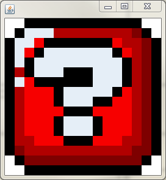

One challenge in having a video game based in graphics is that they can take a lot of memory and will slow down your game if you are constantly loading brand new images. One common solution for simple games is to use a sprite sheet, a single image that has many different images on it. Once it’s loaded, you can choose to only show the small portion of the sprite sheet in your time of need. Since the images remain in memory you will save much of your processing power by not having to reload them every time you want to create a new object.
In order to work on making our levels look fancy, we are going to create an object that will keep a sprite sheet as its instance field and be able to retrieve the appropriate sections using Picture’s getSubPicture method. The getSubPicture method takes in the x,y,width and height of the smaller image that you want to get from a larger one. Getting a subPicture doesn’t load a new picture, so it should be smoother.
The sprite sheet below is the one that we're going to work with. It has many sprites on it that we may want to include in our game.

Each of the sprites are organized in a grid. They are each 16px by 16px with a 1 pixel border. This means that if we know the row and the column of the sprite that we want, we can use math to find it’s x and y. The x coordinate is the COLUMN*17 and the y is the ROW*17. The width and height.
Create a class named TileLoader, whose only purpose will be to hold the sprite sheet and be able to retrieve smaller portions on command.
This class will only have one instance field, a Picture to hold the sheet. In the constructor, use loadFromJar to get the image “mariotiles.png”
Add one method named loadTile, which takes in two ints, the row and column of the tile that you want to get. Use those two values to calculate the x and y of the image, and then return the 16x16 subImage that you get from the spritesheet.
Use the following method below to test out your TileLoader.
public static void tileLoaderTester()
{
TileLoader loader = new TileLoader();
Picture question = loader.loadTile(1,6);
question.resize(256,256);
question.display();
}

In order for this to work, every object must have access to the same TileLoader object. To do this, add to your canvas class the following instance field:
public static TileLoader loader = new TileLoader();
The PUBLIC and STATIC are very important. public means that we can access this variable from anywhere within the project, and static means that you can access it easily using the class name.
For example, if your canvas class is named PlatformerCanvas and the TileLoader variable is named loader, you may say PlatformerCanvas.loader.loadTile(4,5); and it should allow your whole project to access the same TileLoader.